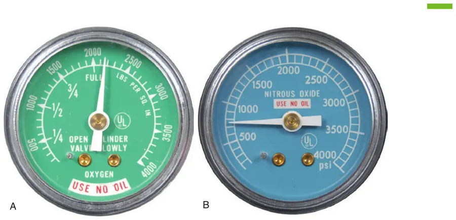
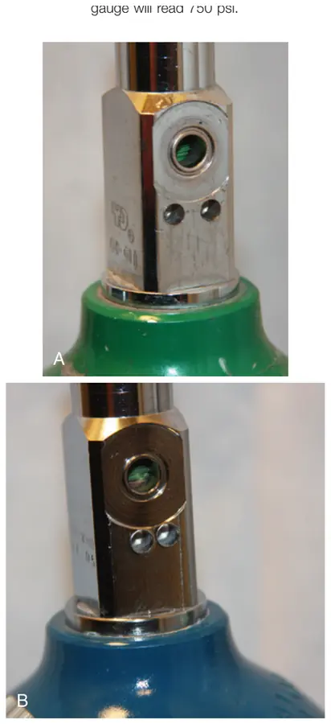

نسخه استخراجشده؛ ترجمه یا تأیید علمی انجام نشده است. وضعیت: captured
یک درجهبندی روشن وجود دارد: نیتروس اکساید برای اضطراب خفیف تا متوسط. ولی بیمار بهشدت مضطربی که قرار است چند کشیدن بدون پیچیدگی داشته باشد، ممکن است به سداسیون عمیقتر نیاز داشته باشد — که معمولاً از راه وریدی است.

و انتخاب دارویی: سداسیون با داروهای ضداضطراب مانند دیازپام یا میدازولام، با یا بدون یک مخدر، به بیماران با اضطراب متوسط تا شدید اجازه میدهد اعمال جراحی را با حداقل استرس روانی پشت سر بگذارند.
و حالا مرزی بسیار صریح که باید جدی بگیری: اگر دندانپزشک در استفاده از این روش مهارت ندارد، بیمارانی که نیازمند سداسیون وریدیاند باید به دندانپزشکی ارجاع داده شوند که برای ارائهی آن آموزش دیده است.
این یک توصیهی محافظهکارانه نیست — یک مرز صلاحیت است. سداسیون وریدی، برخلاف نیتروس اکساید، حاشیهی خطای کمی دارد و مدیریت راه هوایی میطلبد.
و یک فایدهی جانبی تیتراسیون N₂O: وقتی مخلوط بهینهی نیتروس اکساید و اکسیژن برای یک بیمار تعیین شد، همان دوز بهینه احتمالاً در جلسات بعدی هم مؤثر خواهد بود — پس آن عدد را در پرونده بنویس.
یک سوءتفاهم رایج را همینجا رفع کن: سداسیون جایگزین بیحسی موضعی نیست. بیمار سدیتشده همچنان به بیحسی موضعی کامل نیاز دارد؛ سداسیون در اصل اضطراب را مدیریت میکند؛ اثر ضددردی نیتروس اکساید هم برای جراحی کافی نیست و کنترل درد با بیحسی موضعی است.

ترتیب کار روشن است: پس از رسیدن به سطح مناسب سداسیون و آرامش بیمار، بیحسی موضعی زده میشود و سپس جراحی پیش میرود.
و همین ترتیب، یکی از دلایل اصلی کاربرد N₂O را توضیح میدهد: این تکنیک بهویژه برای بیمارانی که در درجهی اول از خودِ تزریق بیحسی میترسند مفید است. یعنی گاز، بیمار را از سد اول عبور میدهد.
و یک قاعدهی دوز که از یونیت فارماکولوژی میآید و اینجا اهمیت مضاعف دارد: بیمار سدیتشده نمیتواند علائم اولیهی مسمومیت با بیحسی موضعی را بهروشنی گزارش کند. پس محاسبهی دوز حداکثر پیش از شروع، در بیمار سدیتشده اختیاری نیست.
و ثبت کن: درصد بهینهی N₂O، مدت سداسیون، حجم و نوع بیحسی موضعی، و پاسخ بیمار. این پرونده، جلسهی بعدی را بسیار سادهتر میکند.